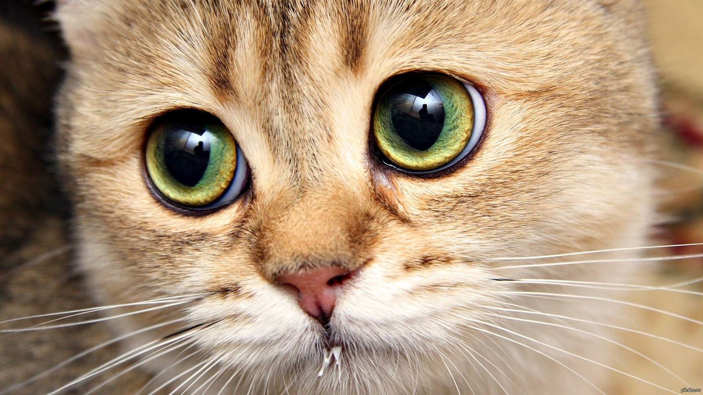
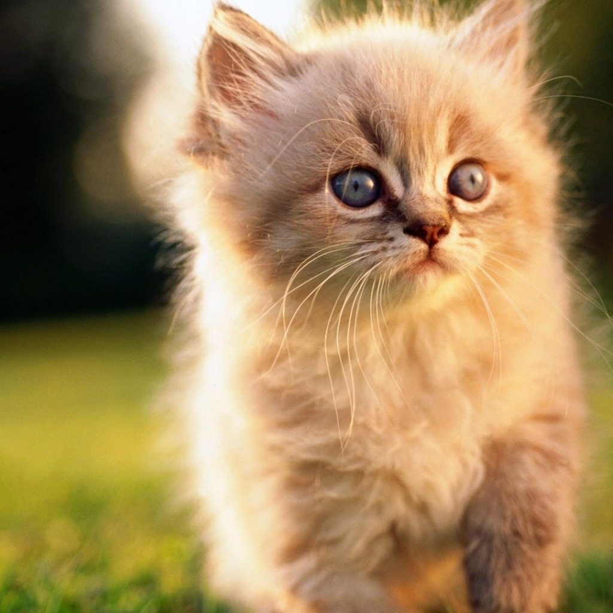
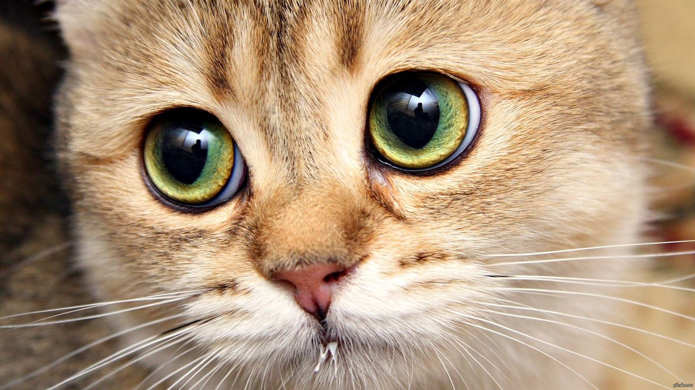
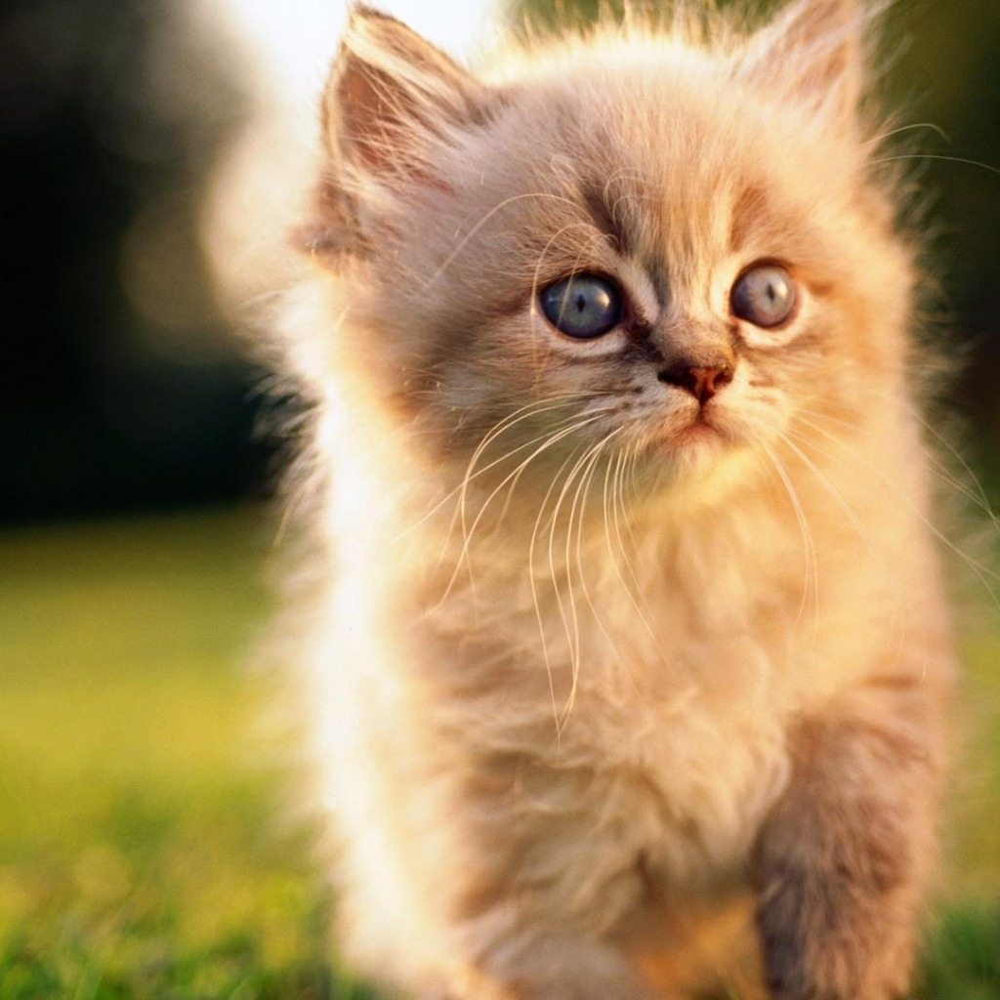

Third Task
 



I am a comment on this first picture. I'm so long that i have a few lines.
I am a comment on this second picture. I'm so long that i have a few lines.
I am a comment on this third picture. I'm so long that i have a few lines.
HOVER FOR DETAILS
The domestic cat (Felis catus or Felis silvestris catus) is a small, typically furry, carnivorous mammal. They are often called house cats when kept as indoor pets or simply cats when there is no need to distinguish them from other felids and felines. Cats are often valued by humans for companionship and for their ability to hunt vermin. There are more than 70 cat breeds, though different associations proclaim different numbers according to their standards.
HOVER FOR DETAILS
Cats are similar in anatomy to the other felids, with a strong flexible body, quick reflexes, sharp retractable claws, and teeth adapted to killing small prey. Cat senses fit a crepuscular and predatory ecological niche. Cats can hear sounds too faint or too high in frequency for human ears, such as those made by mice and other small animals. They can see in near darkness. Like most other mammals, cats have poorer color vision and a better sense of smell than humans. Cats, despite being solitary hunters, are a social species and cat communication includes the use of a variety of vocalizations (mewing, purring, trilling, hissing, growling, and grunting), as well as cat pheromones and types of cat-specific body language.
HOVER FOR DETAILS
Cats have a high breeding rate. Under controlled breeding, they can be bred and shown as registered pedigree pets, a hobby known as cat fancy. Failure to control the breeding of pet cats by neutering, as well as the abandonment of former household pets, has resulted in large numbers of feral cats worldwide, requiring population control.In certain areas outside cats' native range, this has contributed, along with habitat destruction and other factors, to the extinction of many bird species. Cats have been known to extirpate a bird species within specific regions and may have contributed to the extinction of isolated island populations. Cats are thought to be primarily responsible for the extinction of 33 species of birds, and the presence of feral and free-ranging cats makes some otherwise suitable locations unsuitable for attempted species reintroduction.